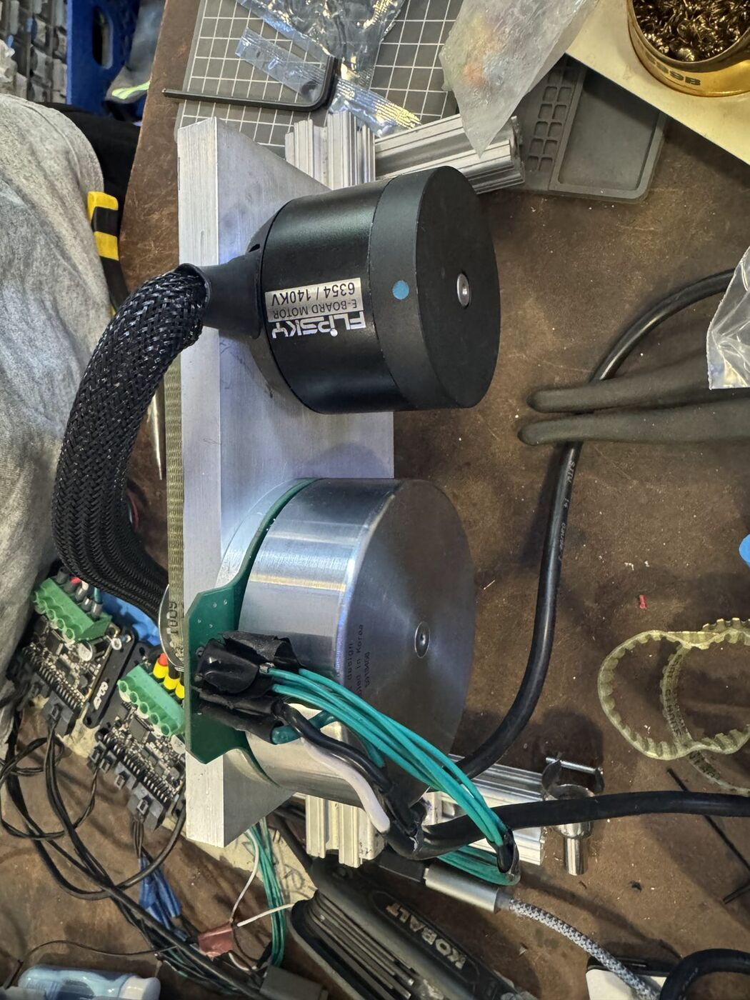

Wesley
Hon
Electrical engineering at UCLA. I design power converters, the controllers that keep them stable, and the boards they run on, then take them to the bench to see what breaks.
- Focus
- Power electronics, feedback control, autonomous systems, mechatronics
- Degree
- BS expected 2028, MS expected 2029
- Now
- Undergraduate researcher, Power Electronics and Energy Conversion Lab
θ₂ 0.0°
τ 0.00 N·m
Balancing
or click the arm
Selected work
All 15 projects

 Underactuated Pendubot
Two links, one motor. Balancing the free link through the dynamics of the driven one.
Underactuated Pendubot
Two links, one motor. Balancing the free link through the dynamics of the driven one.


 Nonlinear MPC for a DC microgrid
Holding a shared DC bus steady through constant-power load steps with four boost converters.
Nonlinear MPC for a DC microgrid
Holding a shared DC bus steady through constant-power load steps with four boost converters.



eCVT actuator testbench A hardware-in-the-loop rig that finds shifter failures on the bench instead of on race day.Where I work
Experience and skills- Power Electronics and Energy Conversion LabUndergraduate researcher, June 2026 to present
- UCLA Bruin Racing SAEElectronics project lead, April 2025 to present
- IdeaHacks 20262nd place, hardware hackathon